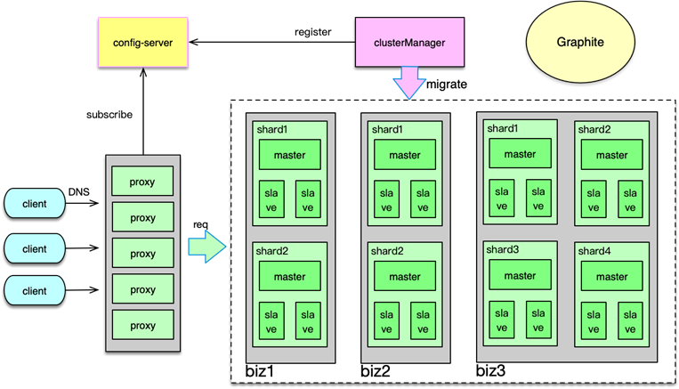

- 00 开篇寄语：缓存，你真的用对了吗？.md
- 01 业务数据访问性能太低怎么办？.md
- 02 如何根据业务来选择缓存模式和组件？.md
- 03 设计缓存架构时需要考量哪些因素？.md
- 04 缓存失效、穿透和雪崩问题怎么处理？.md
- 05 缓存数据不一致和并发竞争怎么处理？.md
- 06 Hot Key和Big Key引发的问题怎么应对？.md
- 07 MC为何是应用最广泛的缓存组件？.md
- 08 MC系统架构是如何布局的？.md
- 09 MC是如何使用多线程和状态机来处理请求命令的？.md
- 10 MC是怎么定位key的.md
- 11 MC如何淘汰冷key和失效key.md
- 12 为何MC能长期维持高性能读写？.md
- 13 如何完整学习MC协议及优化client访问？.md
- 14 大数据时代，MC如何应对新的常见问题？.md
- 15 如何深入理解、应用及扩展 Twemproxy？.md
- 16 常用的缓存组件Redis是如何运行的？.md
- 17 如何理解、选择并使用Redis的核心数据类型？.md
- 18 Redis协议的请求和响应有哪些“套路”可循？.md
- 19 Redis系统架构中各个处理模块是干什么的？.md
- 20 Redis如何处理文件事件和时间事件？.md
- 21 Redis读取请求数据后，如何进行协议解析和处理.md
- 22 怎么认识和应用Redis内部数据结构？.md
- 23 Redis是如何淘汰key的？.md
- 24 Redis崩溃后，如何进行数据恢复的？.md
- 25 Redis是如何处理容易超时的系统调用的？.md
- 26 如何大幅成倍提升Redis处理性能？.md
- 27 Redis是如何进行主从复制的？.md
- 28 如何构建一个高性能、易扩展的Redis集群？.md
- 29 从容应对亿级QPS访问，Redis还缺少什么？.md
- 30 面对海量数据，为什么无法设计出完美的分布式缓存体系？.md
- 31 如何设计足够可靠的分布式缓存体系，以满足大中型移动互联网系统的需要？.md
- 32 一个典型的分布式缓存系统是什么样的？.md
- 33 如何为秒杀系统设计缓存体系？.md
- 34 如何为海量计数场景设计缓存体系？.md
- 35 如何为社交feed场景设计缓存体系？.md
32 一个典型的分布式缓存系统是什么样的？
本课时我们具体看下一个典型的分布式缓存系统是什么样的。
分布式 Redis 服务
由于本课程聚焦于缓存，接下来，我将以微博内的 分布式 Redis 服务系统为例，介绍一个典型的分布式缓存系统的组成。

微博的 Redis 服务内部也称为 RedisService。RedisService 的整体架构如图所示。主要分为Proxy、存储、集群管理、配置中心、Graphite，5 个部分。
- RedisService 中的 Proxy 是无状态多租户模型，每个 Proxy 下可以挂载不同的业务存储，通过端口进行业务区分。
- 存储基于 Redis 开发，但在集群数据存储时，只保留了基本的存储功能，支持定制的迁移功能，但存储内部无状态，不存储 key-slot 映射关系。
- 配置中心用于记录及分发各种元数据，如存储 Proxy 的 IP、端口、配置等，在发生变化时，订阅者可以及时感知。
- Graphite 系统用于记录并展现系统、业务，组件以及实例等的状态数据。
- ClusterManager 用于日常运维管理，业务 SLA 监控，报警等。同时 ClusterManager 会整合 Proxy、Redis 后端存储以及配置中心，对业务数据进行集群管理
多租户 Proxy
RedisService 中的 Proxy 无任何状态，所有 Proxy 实例的启动参数相同。但 Proxy 启动前，clusterManager 会在配置中心设置该实例的业务及存储配置信息，Proxy 启动后，到配置中心通过自己的 IP 来获取并订阅配置，然后进行初始化。Proxy 与后端 Redis 存储采用长连接，当 Client 并发发送请求到 Proxy 后，Proxy 会将请求进行打包，并发地以 pipeline 的方式批量访问后端，以提升请求效率。对于多租户 Proxy，由于不同业务的存储位置可能不同，因此对每个请求需要进行业务区分，一般有 2 种方式进行区分。
方案 1，按照 key 的 namespace 前缀进行业务区分，比如 Client 分别请求 user、graph、feed 业务下的 key k1，业务 Client 分别构建 {user}k1、{graph}k1、{feed}k1，然后发送给 Proxy，Proxy 解析 key 前缀确定 key 对应的业务。
方案 2，对每个业务分配一个业务端口，不同业务访问自己的端口，Proxy 会根据端口确定业务类型。这种类型不需要解析 key 前缀，不需要重构请求，性能更为高效。但需要为业务配置端口，增加管理成本，实践上，由于业务 Redis 资源一般会采用不同端口，所以业务 Proxy 可以采用业务资源分片的最小端口来作为业务端口标志。
Redis 数据存储
RedisService 中的 Redis 存储基于 Redis 5.0 扩展，内部称 wredis，wredis 不存储 key-slot 映射，只记录当前实例中存储的 slot 的 key 计数。wredis 处理任何收到的操作命令，而数据分片访问的正确性由访问端确保。在每日低峰时段，clusterManager 对 Redis 存储进行扫描，发现 slot 存储是否存在异常。因为微博中有大量的小 value key，如果集群中增加 key-slot 映射，会大大增大存储成本，通过消除 key-slot 映射等相关优化，部分业务可以减少 20% 以上的存储容量。
wredis 支持 slot 的同步迁移及异步迁移。同时支持热升级，可以毫秒级完成组件升级。wredis 也支持全增量复制，支持微博内部扩展的多种数据结构。热升级、全增量复制、数据结构扩展等，在之前的课时中有介绍，具体可以参考之前讲的“Redis 功能扩展”课时的内容。
配置中心 configService
微博的配置中心，内部称为 configService，是微博内部配置元数据管理的基础组件。configService 自身也是多 IDC 部署的，配置信息通过多版本数据结构存储，支持版本回溯。同时配置数据可以通过 merkle hash 树进行快速一致性验证。RedisService 中的所有业务、资源、Proxy 的配置都存储在 configService 中，由 cluster 写入并变更，Proxy、业务 Client 获取并订阅所需的配置数据。configService 在配置节点发生变更时，会只对节点进行事件通知，订阅者无需获取全量数据，可以大大减轻配置变更后的获取开销。
ClusterManager 是一个运维后台。主要用于运维工作，如后端资源、Proxy 的实例部署，配置变更，版本升级等。也用于数据的集群管理，clusterManager 内部会存储业务数据的集群映射，并在必要时进行数据迁移和故障转移。迁移采用 slot 方式，可以根据负载进行迁移流量控制，同时会探测集群内的节点状态，如在 wredis 的 master 异常后，从 slave 中选择一个新的master，并重建主从关系。clusterManager 还支持业务访问的 Proxy 域名管理，监控集群节点的实例状态，监控业务的 SLA 指标，对异常进行报警，以便运维及时进行处理。
集群数据同步
RedisService 中的数据存储在多个区域，每个区域都有多个 IDC。部署方式是核心内网加公有云的方式。使用公有云，主要是由微博的业务特点决定的，在突发事件或热点事件发生时，很容易形成流量洪峰，读写 TPS 大幅增加，利用公有云可以快速、低成本的扩展系统，大幅增加系统处理能力。根据业务特点，wredis 被分为缓存和存储类型。对于 Redis 缓存主要通过消息总线进行驱动更新，而对于 Redis 存储则采用主从复制更新。更新方式不同，主要是因为 Redis 作为缓存类型的业务数据，在不同区或者不同 IDC 的热点数据不同，如果采用主从复制，部署从库的 IDC，会出现热数据无法进入缓存，同时冷数据无法淘汰的问题，因为从库的淘汰也要依赖主库进行。而对于 Redis 作存储的业务场景，由于缓存存放全量数据，直接采用主从复制进行数据一致性保障，这样最便捷。
© 2019 - 2023 Liangliang Lee. Powered by gin and hexo-theme-book.